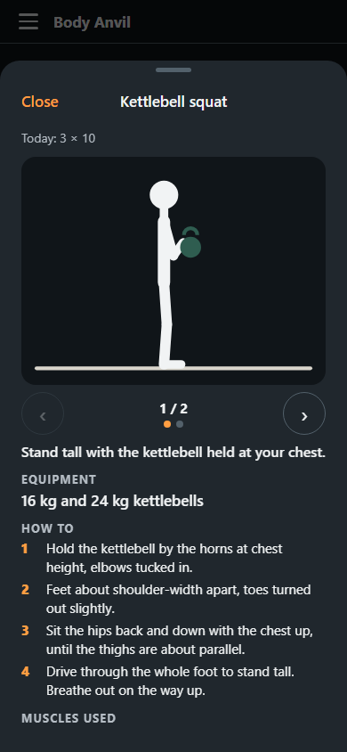
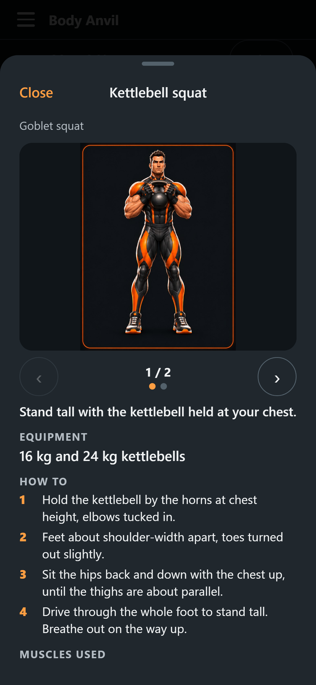
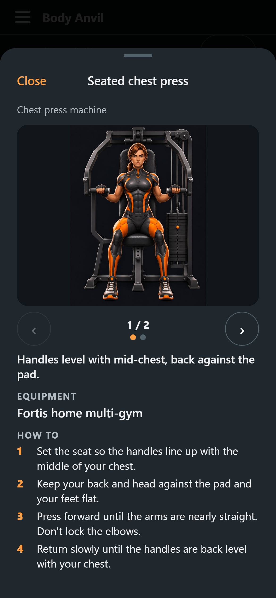
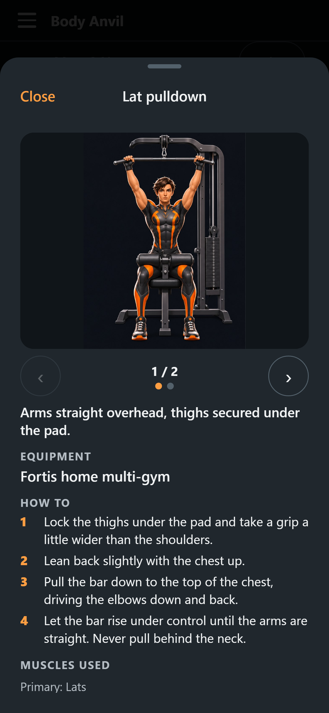
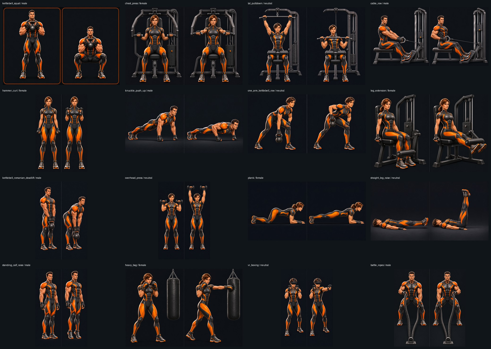

Hero exercise guides in the app
16 guides · 32 offline steps · three established Body Anvil heroes. Open a workout exercise's Show how, or use Muscle coverage → Log exercise → Show exercise guide.
Before and after at 390 px

Before
After — male hero
After — female hero
After — neutral heroFull catalogue

Implementation and validation · Exact prompts, references and asset hashes